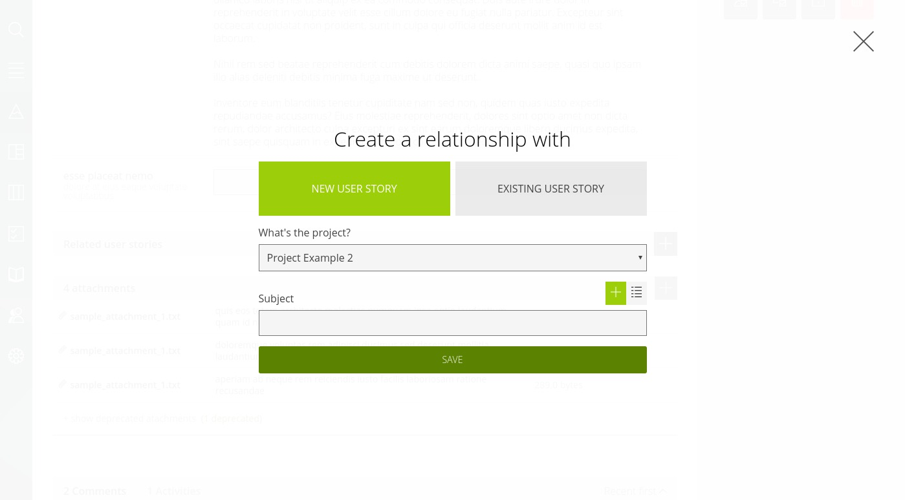

Epics detail
To access the epic detail from the epic dashboard click on the epic name. Alternatively, the epic will be accessible from the child User Stories and tasks, in the header of their detail.
In the epic detail you will be able to do everything of what you can already do in User Stories and tasks: assign it, update the description, attach files, comment… Note, that you can also edit the epic color, this color will be visible in all the child User Stories and tasks to identify that they pertain to this epic.

Q. How to link epics and user Stories?
A. Find a new module named Related user stories between the Custom Fields and the Attachments module. These are the User Stories linked to your epic. When all the linked User Stories are done, consider your epic closed.
From this module, clicking on the (+) Add button you will be able to:
- Create a new User Story or a bulk of User Stories in any of your projects. These User Stories will be then linked to your Epic.
- Create a new link from an already created User Story in any project.
Your Epic can be composed of multiple User Stories across multiple projects.
